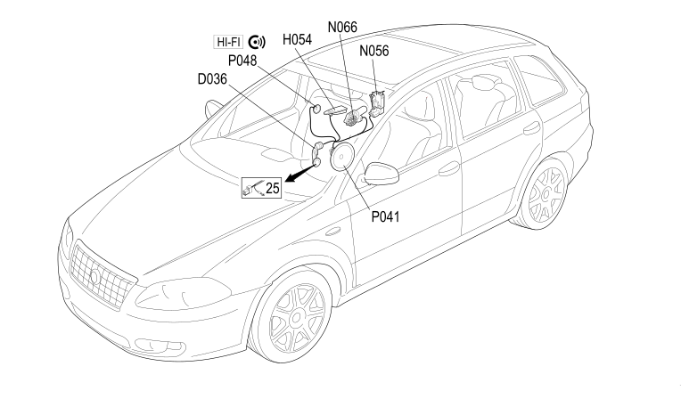

35 RIGHT REAR DOOR
- Path
- Electrical equipment > 2 WIRING > 35 RIGHT REAR DOOR
- Kind
- wiring harness
- Applies to
- all engines; all production periods
- Interactive page
- https://sloeber94.github.io/elrnDB-fCrm/en/#/194001824
Applies to: all engines; all production periods

Topics that link to this page (11)
- D036 RIGHT REAR DOOR COUPLING (RIGHT REAR DOOR)
- D036 RIGHT REAR DOOR COUPLING (RIGHT REAR DOOR)
- D036 RIGHT REAR DOOR COUPLING (RIGHT REAR DOOR)
- H054 ELECTRIC WINDOW SWITCH ON RIGHT REAR DOOR (RIGHT REAR DOOR)
- N056 RIGHT REAR DOOR LOCK GEARED MOTOR (RIGHT REAR DOOR)
- N066 RIGHT REAR ELECTRIC WINDOW MOTOR (RIGHT REAR DOOR)
- P041 SPEAKER IN RIGHT REAR DOOR (RIGHT REAR DOOR)
- P041 SPEAKER IN RIGHT REAR DOOR (RIGHT REAR DOOR)
- P041 SPEAKER IN RIGHT REAR DOOR (RIGHT REAR DOOR)
- P048 RIGHT REAR TWEETER SPEAKER (RIGHT REAR DOOR)
- P048 RIGHT REAR TWEETER SPEAKER (RIGHT REAR DOOR)